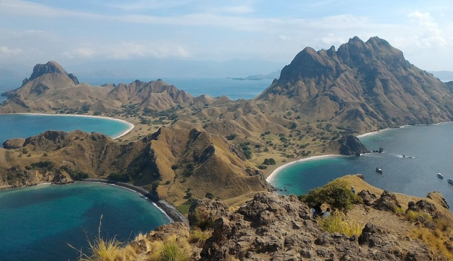

WISATA PULAU PADAR
Pulau Padar termasuk kawasan Taman Nasional Komodo yang tak dihuni biawak atau komodo.
Meski demikian, pemandangan Pulau Padar pun gak kalah cantik dengan pulau lainnya.
Ada banyak hal yang bisa kamu lakukan di Pulau Padar.
Sebelum liburan ke sana, simak dulu informasi lengkap soal lokasi, rute, harga, dan tips ke Pulau Padar untuk bekalmu nanti.

- Rute dan Akses Lokasi
Naiklah pesawat dengan tujuan Denpasar-Labuan Bajo selama 30 menit. Lanjutkan perjalanan ke Dermaga Loh Liang, Pulau Komodo,
sebelum naik speed boat ke Pulau Padar. Selanjutnya, kamu harus naik ke puncak bukit yang ditempuh selama kurang lebih dari 30 menit
- Harga Tiket
Kawasan wisata pulau Padar ini buka setiap hari 24 jam. Oleh karena itu,
anda bebas berkunjung ke tempat wisata ini kapan saja tanpa terbatas waktu.
Adapun harga tiket masuk wisata Pulau Padar adalah Rp 5.000 untuk para wisatawan domestik.
Biaya yang dikeluarkan tersebut masih belum mencakup aktivitas snorkeling,
trekking maupun diving bagi pengunjung yang ingin mencoba aktivitas seru tersebut.
- Fasilitas dan Akomodasi
Sewaboat menyediakan jasa penyewaan kapal menuju ke Pulau Padar. Ada 2 jenis kapal yang tersedia, yakni PAS 01 dan PAS 02.
Kapal PAS 01 memiliki ukuran yang cukup kecil dengan kapasitas 1 hingga 8 penumpang.
Sedangkan kapal PAS 02 adalah kapal dengan ukuran yang lebih besar yang bisa menampung 1 sampai 15 orang penumpang.
Tersedia juga Paket Wisata Pulau Padar untuk kamu yang menginginkan paket wisata lengkap ke pulau ini.
- Tips Saat ke Pulau Padar
Jika ingin melihat keindahan lokasi secara keseluruhan ada baiknya untuk datang lebih pagi.
Hal tersebut karena cuaca di sini akan semakin panas dan terik pada siang hari.
Selama mendaki atau trekking jangan lupa untuk membawa air minum.
Kamu akan melewati jalur yang panjang dan curam sehingga bisa menghabiskan energi untuk mendaki
Gunakanlah alas kaki tertutup seperti sepatu atau sepatu sandal dengan kaos kaki.
Akan ada banyak bebatuan yang selama perjalanan, jangan sampai kaki kamu cedera karena tidak menggunakan pelindung kaki yang tepat ya.
Gunakanlah alas kaki tertutup seperti sepatu atau sepatu sandal dengan kaos kaki. Akan ada banyak bebatuan yang selama perjalanan,
jangan sampai kaki kamu cedera karena tidak menggunakan pelindung kaki yang tepat ya.